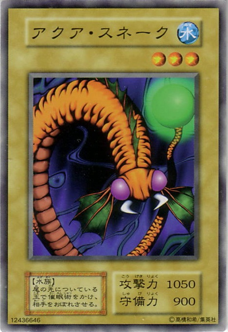

it is the under water snake, There are a few ways you can tell a nonvenomous water snake from a venomous water moccasin,or cottonmouth, according to the University of Florida(opens in new tab). Water snakes are slender compared with cottonmouths, which are thicker and heavier. Water snakes also have longer
